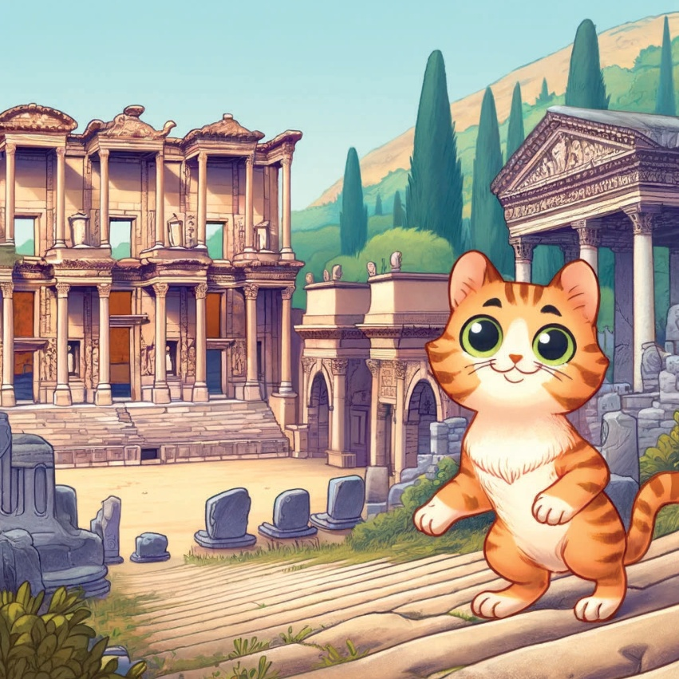
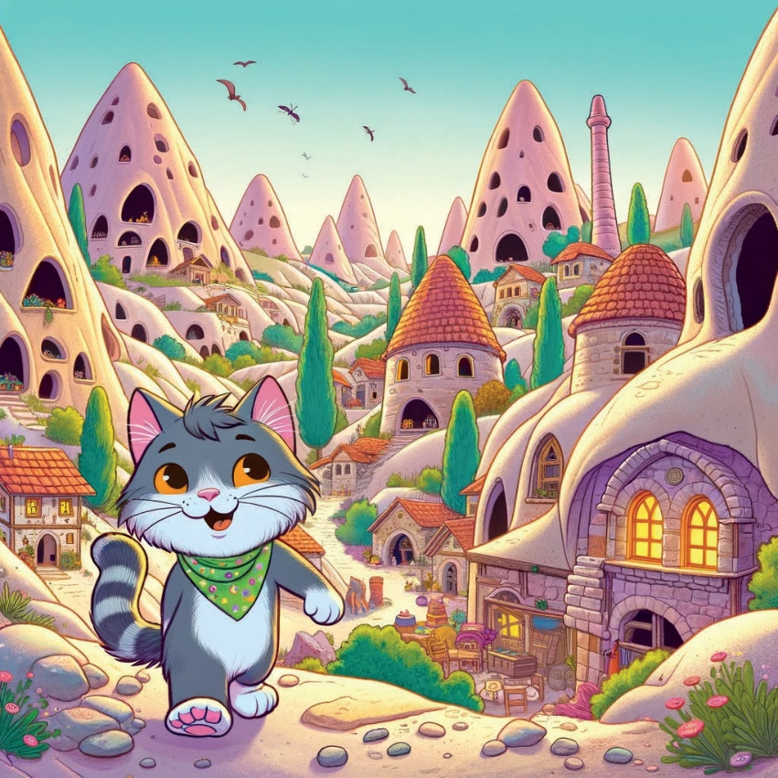
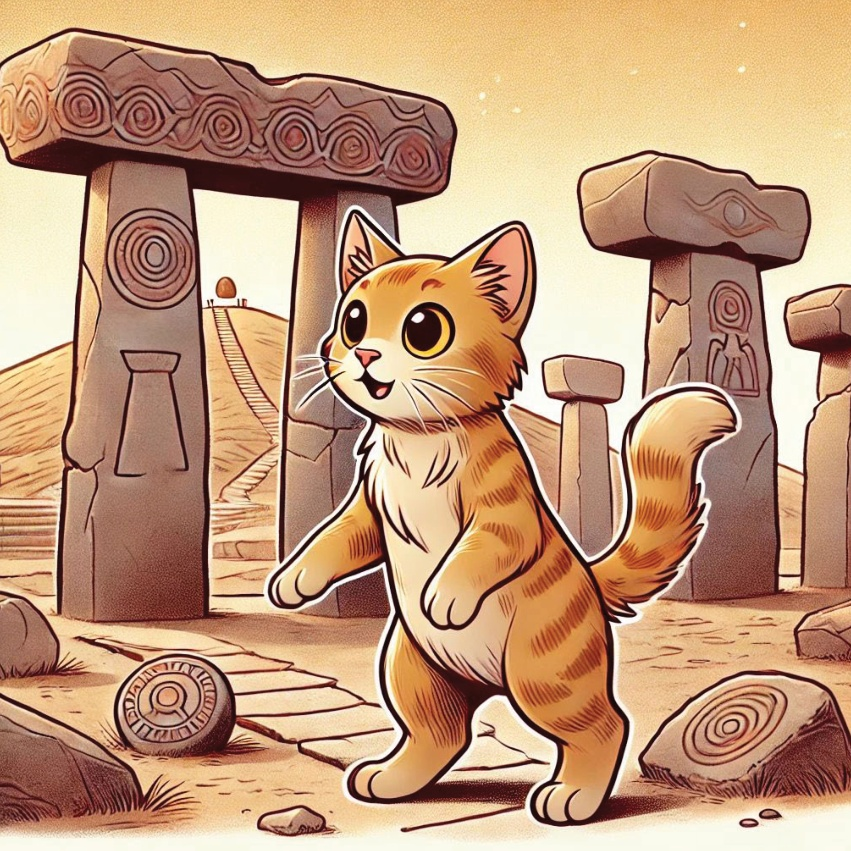

Orică, în vremuri îndepărtate,
aisea o pisică curiosă și mică, denumită Karamel,
care adorase poveștile și aventurile.
Karamel a plecat într-o călătorie prin Turcia,
pentru a descoperi poveștile și legendele fiecărui regiune.
4
5
Marea Regiu - Istanbul:
Legendațiului Turnului Femeii
Karamel a făcut primul ei stop în Istanbul,
unde a învățat despre povestea Turnului Femeilor. Turnul era înalt pe o insulă mică în Bosphorus,
ținând multe secrete și povești.
6
7
Regiunea Aeolian – Izmir:
Povestea lui Ephesus
Următoarea, Karamel a mers la Izmir să audă povestile despre Ephesus.
Ruinele antice vorbesc de o orașă mare, cu temple, teatre și piețe aglomerate.
8

9
Regiunea Mediterană - Antalya:
Povestea Chimerei
În Antalya, Karamel au auzit povestea despre Chimera, o creatură mitică care respirase foc.
A vizitat zona unde flăcări încă ard de pe roci, un testament al legendă.
10
11
Central Anatolia - Cappadocia:
Fairy Chimneys and Cave Dwellings
În Cappadocia,
Karamel a explorat și a învățat despre chimnele de praf,
și despre oamenii care locuiau
în casele din groti,
ascunse de invadere.
12

13
Marea de Sibiu - Trabzon:
Legenda Monasterului Sumela
Karamel căpleca drumul spre Trabzon
în regiunea Mării de Sibiu, pentru a asculta legenda Monasterului Sumela.
Construit pe o stâncă, monasterul era un loc de mister și respect.
14
15
Eastern Anatolia - Munții Ağrı:
Legenda lui „Arca lui Noe”
În Anatolia de Est,
Karamel a vizitat Munții Ağrı,
un loc legendar de odihnă al Arcii lui Noe.
Munții înalți și acoperiți cu zăpadă erau un loc de bucurie și povești vechi.
16
17
Sud Est (Anatolia) - Gobekli Tepe:
Finalul lui Karamel a fost în Gobekli Tepe,
în Anatolia de Sud, unde a explorat situl antic considerat
cel mai vechi templu al lumii și a învățat despre misterele pe care le conține.
18

19
Cu suflet plin cu povești magice și minte plină de legendă, Karamel a realizat că adevărurile adevărate ale Turcu erau poveștile ei și sabia ce le încăznea.
A revenit acasă, visând la următoarea aventură.